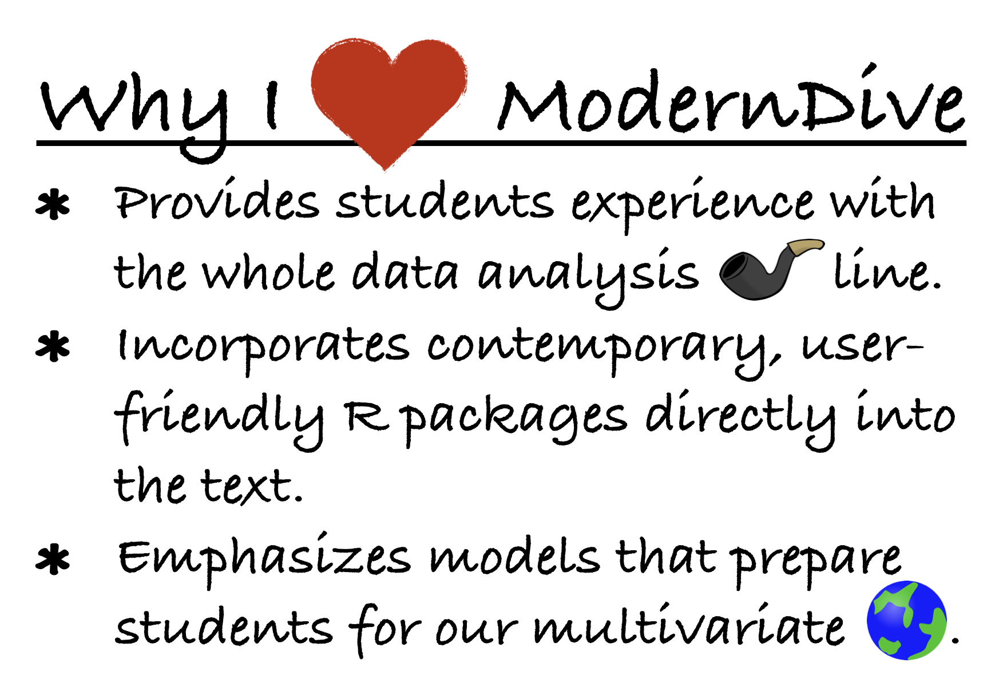

이것은 2020년 7월 2일에 게시된 ModernDive의 1.1.0 버전입니다. 이전 버전의 ModernDive를 보려면 아래의 “이 책에 대하여” 섹션을 참조하세요.
머리말
A ModernDive into R and the Tidyverse
tidyverse 데이터 과학 도구를 사용하여 통계적 추론을 가르치기 위한 오픈 소스이며 완전히 재현 가능한 전자 교재입니다.
머리말

도와주세요! 코딩은 처음인데 R과 RStudio를 배워야 해요! 어떻게 해야 하죠?
이 질문을 스스로에게 던지고 있다면, 제대로 찾아오셨습니다! “학생들을 위한 안내” 섹션부터 시작하세요.
- 강의에서 이 책을 사용하고자 하는 강사이신가요? 먼저 “학생들을 위한 안내” 섹션을 읽어보시기를 권장합니다. 그런 다음, 이 책으로 가르치는 방법에 대한 자세한 정보는 “강사들을 위한 안내” 섹션을 읽어보세요.
- ModernDive에 연결하고 기여하고 싶으신가요? “연결 및 기여” 섹션에서 그 방법을 확인하세요.
- 이 책의 출판 과정이 궁금하신가요? 오픈 소스 기술, 특히 R Markdown과 bookdown 패키지에 대한 자세한 정보는 “이 책에 대하여” 섹션을 읽어보세요.
학생들을 위한 안내
이 책은 대수학, 미적분학, 이전의 프로그래밍/코딩 경험과 같은 선수 지식을 요구하지 않습니다. 데이터 과학자, 통계학자, 데이터 저널리스트 및 기타 연구자들이 하는 방식대로 데이터를 분석하고 데이터로 질문에 답하는 연습을 위한 친절한 입문서가 되고자 합니다.
그림 ?fig-moderndive-figure 에서 앞으로의 여정에 대한 지도를 제시합니다.
(ref:flowchart) ModernDive 순서도.

먼저 ?sec-getting-started장 데이터 시작하기에서는 R과 RStudio의 차이점을 배우고, R로 코딩을 시작하며, 첫 R 패키지를 설치하고 로드하고, 첫 데이터셋(2013년 뉴욕시 공항에서 출발하는 모든 국내선 flights)을 탐색하게 됩니다. 그런 다음 이 책의 다음 세 부분(Part 2와 4는 하나로 결합됨)을 다룹니다.
tidyverse를 활용한 데이터 과학.tidyverse패키지들을 사용하여 데이터 과학 도구 상자를 조립합니다. 특히 다음 내용을 다룹니다:- ?sec-viz장:
ggplot2패키지를 사용한 데이터 시각화. - ?sec-wrangling장:
dplyr패키지를 사용한 데이터 가공. - ?sec-tidy장:
tidyverse의 모든 패키지를 위한 표준화된 데이터 입출력 형식으로서의 “tidy” 데이터 개념에 대해 배웁니다. 또한readr패키지를 사용하여 스프레드시트 파일을 R로 불러오는 방법을 배웁니다.
- ?sec-viz장:
moderndive를 활용한 데이터 모델링.moderndive패키지의 이러한 데이터 과학 도구와 도우미 함수들을 사용하여 첫 번째 데이터 모델을 적합시킵니다. 특히 다음 내용을 다룹니다:- ?sec-regression장: 설명 변수가 하나뿐인 기초 회귀 모델을 살펴봅니다.
- ?sec-multiple-regression: 설명 변수가 두 개 이상인 다중 회귀 모델을 조사합니다.
infer를 활용한 통계적 추론. 새로 습득한 데이터 과학 도구를 다시 사용하여infer패키지로 통계적 추론을 풀어냅니다. 특히 다음 내용을 다룹니다:- ?sec-sampling장: 통계적 추론에서 표본 변동성(sampling variability)의 역할과 표본 크기가 이 표본 변동성에 미치는 영향에 대해 배웁니다.
- ?sec-confidence-intervals장: 붓스트래핑(bootstrapping)을 사용하여 신뢰 구간을 구축합니다.
- ?sec-hypothesis-testing장: 순열(permutation)을 사용하여 가설 검정을 수행합니다.
moderndive를 활용한 데이터 모델링 (재방문): 통계적 추론에 대한 이해를 바탕으로 ?sec-regression장과 ?sec-multiple-regression장에서 구축한 모델들을 다시 살펴보고 검토합니다. 특히 다음 내용을 다룹니다:- ?sec-inference-for-regression장: 회귀 환경에서 신뢰 구간과 가설 검정을 해석합니다.
?sec-thinking-with-data 장에서는 예시 사례 연구를 제시하며 “데이터로 자신의 이야기를 들려주는 것”이 무엇을 의미하는지에 대한 논의로 마무리하겠습니다.1
이 책에서 배우기를 기대하는 것
이 책을 마칠 때쯤이면 여러분은 다음을 수행하는 방법을 배우게 되기를 바랍니다:
- 데이터 과학을 위해 R과 R 패키지 모음인
tidyverse를 사용합니다. - 선형 회귀라고 알려진 방법을 사용하여 데이터에 첫 번째 모델을 적합시킵니다.
- 표본 추출, 신뢰 구간, 가설 검정을 사용하여 통계적 추론을 수행합니다.
- 이러한 도구들을 사용하여 데이터로 여러분의 이야기를 들려줍니다.
데이터 이야기란 무엇을 의미할까요? 세심한 시각 자료와 사려 깊은 토론을 통해 독자가 질문에 답하는 데 참여하도록 이끄는 데이터를 포함한 모든 분석을 의미합니다. 데이터 이야기에 대한 추가 논의는 블로그 포스트 “데이터로 의미 있는 이야기 들려주기(Tell a Meaningful Story With Data)”에서 확인할 수 있습니다.
이 책을 진행하는 동안 여러분은 데이터 시각화, 데이터 형식 지정, 데이터 가공 및 회귀를 사용한 데이터 모델링과 같은 도구들로 무장한 “데이터 과학 도구 상자”를 개발하게 될 것입니다.
특히 이 책은 데이터 시각화에 크게 의존할 것입니다. 오늘날 우리는 아이디어를 전달하려는 수많은 그래픽의 홍수 속에 살고 있습니다. 우리는 무엇이 좋은 그래픽을 만드는지, 그리고 데이터 내의 관계를 전달하는 데 사용되는 표준 방식이 무엇인지 탐구할 것입니다. 일반적으로 시각화를 이 책의 거의 모든 아이디어를 구축하는 방법으로 사용할 것입니다.
이 책의 통계적 교훈을 전달하기 위해 의도적으로 수학 공식의 사용을 최소화했습니다. 대신 데이터 시각화와 컴퓨터 시뮬레이션을 사용하여 통계에 대한 개념적 이해를 키우게 될 것입니다. 이것이 과거에 통계가 전통적으로 가르쳐졌던 방식이나 흔히 인식되는 방식보다 더 직관적인 경험이 되기를 바랍니다.
마지막으로, 식자 프로그래밍(literate programming)의 중요성을 배울 것입니다. 이는 컴퓨터가 실행하기에 유용할 뿐만 아니라, 독자가 분석이 정확히 무엇을 하는지 그리고 여러분이 어떻게 했는지를 이해하는 데에도 유용한 코드를 작성하는 방법을 배운다는 것을 의미합니다. 이는 재현 가능한 연구(reproducible research)를 장려하기 위한 더 큰 노력의 일부입니다(자세한 내용은 이 머리말의 “재현 가능한 연구” 소섹션을 참조하세요). Hal Abelson 은 우리가 이 책 전체에서 따를 문구를 만들었습니다:
프로그램은 사람들이 읽기 위해 작성되어야 하며, 기계가 실행하는 것은 부수적인 일일 뿐이다.
프로그래밍을 배우면서 어려운 순간들이 있을 수 있음을 이해합니다. 우리 둘 다 여전히 어려움을 겪으며, 종종 웹 검색을 통해 답을 찾고 동료들에게 도움을 요청하곤 합니다. 하지만 장기적으로 보면 프로그래밍을 통해 우리 모두는 문제를 더 빠르고 우아하게 해결할 수 있습니다. 우리는 여러분의 시작을 돕기 위해 이 책을 썼으며, 모든 사람을 도울 준비가 된 거대한 R 사용자 커뮤니티가 있다는 사실을 알아야 합니다. 이 커뮤니티는 특히 인터넷상의 다양한 포럼과 stackoverflow.com과 같은 웹사이트에 존재합니다.
데이터/과학 파이프라인
통계학을 단순히 숫자들의 뭉치로 생각할 수도 있습니다. 우리는 스포츠 경기 중계를 들을 때 “통계 전문가(statistician)”라는 말을 흔히 듣습니다. 통계학(특히 데이터 분석)은 야구 타율과 같은 숫자를 설명하는 것 외에도 모든 과학 분야에서 중추적인 역할을 합니다.
매체에서 “통계적으로 유의미하다”라는 문구가 흔히 쓰이는 것을 들을 수 있을 것입니다. “과학적으로 초콜릿이 몸에 좋다는 것이 밝혀졌다”라는 기사들도 볼 수 있습니다. 이러한 주장의 근간이 되는 것이 데이터 분석입니다. 이 책을 마칠 때쯤이면 이러한 주장을 믿어야 할지, 아니면 경계해야 할지 더 잘 이해할 수 있게 될 것입니다. 데이터 분석 내부에는 이 책 전반에 걸쳐 논의할 많은 세부 분야가 있습니다(반드시 이 순서는 아닙니다):
- 데이터 수집
- 데이터 가공
- 데이터 시각화
- 데이터 모델링
- 추론
- 상관관계와 회귀
- 결과 해석
- 데이터 소통/스토리텔링
이러한 세부 분야는 Grolemund 와 Wickham 이 이전에 “데이터/과학 파이프라인”이라고 명명한 그림 ?fig-pipeline-figure 에 요약되어 있습니다.

우리는 데이터 시각화를 통해 그림의 회색 부분인 이해(Understand) 단계부터 파헤치기 시작할 것입니다. 그다음 tidy 데이터와 데이터 가공이 무엇을 의미하는지에 대해 논의하고, 마지막으로 소통(Communication)을 통해 우리 모델의 결과를 해석하고 논의하는 것으로 마무리하겠습니다. 이러한 단계들은 모든 통계 분석에 필수적입니다. 그런데 왜 통계학에 관심을 가져야 할까요?
많은 분야에서 통계학 수업을 필수로 요구하는 이유가 있습니다. 과학적 지식은 통계적 유의성과 데이터 분석에 대한 이해를 통해 성장합니다. 통계학을 두려워할 필요는 없습니다. 통계학은 더 이상 예전처럼 지루한 학문이 아니며, 컴퓨터 계산과 결합되었을 때 과학 분야에서의 재현 가능한 연구가 어떻게 과학적 지식을 폭발적으로 증가시키는지 확인하게 될 것입니다.
재현 가능한 연구
가장 중요한 도구는 시작할 때 최종 결과물이 재현 가능할 것이라는 _마음가짐_이다. – Keith Baggerly
이 책의 또 다른 목표는 독자들이 재현 가능한 분석의 중요성을 이해하도록 돕는 것입니다. 독자들이 처음부터 자신의 분석을 재현 가능하게 만드는 습관을 들이기를 바랍니다. 이는 우리가 여러분이 새로운 습관을 기르도록 돕는다는 것을 의미합니다. 여기에는 연습이 필요하며 때로는 어려울 수도 있습니다. 여러분의 코드를 기록하고 잘 문서화하는 것이 나중에 자신과 잠재적인 협업자들을 돕는 데 왜 그토록 중요한지 알게 될 것입니다.
결과를 한 프로그램에서 워드 프로세서로 복사하여 붙여넣는 방식은 효율적이고 효과적인 과학 연구를 수행하기에 이상적인 방법이 아닙니다. 여러 프로그램을 오가며 그림을 복사해서 붙여넣는 데 시간을 쓰기보다, 데이터 수집과 데이터 분석에 더 많은 시간을 할애하는 것이 훨씬 중요합니다.
전통적인 분석 방식에서는 원본 데이터에 오류가 발견되면 전체 과정을 다시 거쳐야 했습니다. 그림을 다시 만들고, 모든 새 그림과 통계 분석 결과를 문서에 일일이 복사하여 붙여넣어야 했습니다. 이는 오류가 발생하기 쉽고 실망스러운 시간 낭비입니다. 우리는 여러분이 이러한 지루한 활동에서 벗어나 과학을 하는 데 더 많은 시간을 쓸 수 있도록 돕고 싶습니다.
우리는 계산적 재현성에 대해 이야기하고 있다. – Yihui Xie
재현성은 다양한 과학 분야에서 여러 의미를 갖습니다. 다른 연구자가 같은 단계를 따라 해서 유사한 결과를 얻을 수 있도록 실험이 수행되었는가? 이 책에서 우리는 계산적 재현성(computational reproducibility)이라고 알려진 것에 집중할 것입니다. 이는 자신의 모든 데이터 분석 과정, 데이터셋, 결론을 다른 사람에게 전달했을 때 그들의 컴퓨터에서도 정확히 같은 결과를 얻을 수 있음을 의미합니다. 이를 통해 처음부터 다시 시작하거나 컴퓨터마다 다를 수 있는 단계 목록을 따르는 대신, 결과를 해석하고 가정을 고려하는 데 시간을 쓸 수 있습니다.
학생들을 위한 마지막 메모
이 시점에서 강사들의 관점, 기여 및 협업 방법, 또는 이 책의 제작 및 출판에 대한 기술적 세부 사항에 관심이 있다면 장의 나머지 부분을 계속 읽으세요. 그렇지 않다면 ?sec-getting-started장에서 R과 RStudio를 시작해 봅시다!
강사들을 위한 안내
자료
ModernDive를 사용하는 데 도움이 되는 몇 가지 자료는 다음과 같습니다:
- 학습 확인(Learning checks)이라는 이름의 복습 질문들을 포함시켰습니다. 모든 학습 확인에 대한 해설은 온라인 버전의 부록 D(https://moderndive.com/D-appendixD.html)에서 확인할 수 있습니다.
- Jenny Smetzer 박사와 Albert Y. Kim은 일련의 실습 및 문제 세트를 작성했습니다. https://moderndive.com/labs에서 확인하실 수 있습니다.
- ModernDive를 사용하는 두 과정의 웹페이지를 볼 수 있습니다:
- Smith College “SDS192 데이터 과학 입문”: https://rudeboybert.github.io/SDS192/.
- Smith College “SDS220 확률 및 통계 입문”: https://rudeboybert.github.io/SDS220/.
왜 이 책을 썼는가?
이 책은 다음 도서들에서 영감을 받았습니다:
- Mathematical Statistics with Resampling and R (Chihara and Hesterberg 2011)
- OpenIntro: Intro Stat with Randomization and Simulation (Diez, Barr, and Çetinkaya-Rundel 2014)
- R for Data Science (Grolemund and Wickham 2017)
상급 학부생과 대학원생을 위해 설계된 첫 번째 책은, 대표본 근사치나 다른 수학 공식 대신 컴퓨터 계산을 사용하여 표집 분포와 같은 통계적 개념을 전달하기 위해 재표본 추출(resampling)을 사용하는 방법에 대한 훌륭한 자료를 제공합니다. 마지막 두 권의 책은 기초 통계 및 데이터 과학을 배우기 위한 무료 옵션으로, 비싼 전통적인 기초 통계학 교재들에 대한 대안을 제시합니다.
현재 존재하는 기초 통계학 교재들을 살펴보았을 때, 새로 개발된 많은 R 패키지들, 특히 이 책의 첫 번째 파트인 “tidyverse를 활용한 데이터 과학”의 중심이 되는 ggplot2, dplyr, tidyr, readr과 같은 tidyverse 패키지들을 텍스트에 직접 통합한 책이 없다는 것을 알게 되었습니다.
또한 “학생들을 위한 안내” 소섹션에서 나열한 네 가지 학습 목표를 모두 새로운 학습자에게 노출시키는 오픈 소스이며 쉽게 재현 가능한 교재가 없었습니다. 우리는 계산 기법을 통해 이론을 발전시키고 입문자들이 그 과정에서 R 언어를 마스터하도록 돕는 책을 쓰고 싶었습니다.
이 책은 누구를 위한 것인가?
이 책은 커리큘럼에 더 많은 데이터 과학 주제를 주입하고 싶은, RStudio를 사용하는 전통적인 기초 통계학 강의의 강사들을 대상으로 합니다. RStudio는 서버 버전이나 데스크톱 버전 중 하나를 사용할 수 있습니다. (이에 대해서는 ?sec-installing절에서 자세히 설명합니다.) 우리는 이 수업을 듣는 학생들이 이전에 대수학이나 미적분학, 프로그래밍/코딩 경험이 없다고 가정합니다.
우리는 이 글을 쓰면서 다음과 같은 원칙과 믿음을 염두에 두었습니다. 만약 여러분이 이들에 동의한다면, 이 책은 여러분을 위한 것입니다.
- 강의와 실습 사이의 경계를 허물 것
- 노트북과 오픈 소스 기반의 비독점적 통계 소프트웨어의 가용성과 접근성이 높아짐에 따라 실습과 강의 사이의 엄격한 이분법을 완화할 수 있습니다.
- 학생들이 소프트웨어를 일주일에 한 번 이하로만 사용한다면 그것을 사용하는 것의 중요성을 이해하기가 훨씬 어렵습니다. 외국어를 배우는 사람이 문법 규칙을 잊어버리는 것과 마찬가지로 학생들도 구문을 잊어버립니다. 빈번한 강화가 핵심입니다.
- 전체 데이터/과학 연구 파이프라인에 집중할 것
- 우리는 그림 ?fig-pipeline-figure에서 볼 수 있는 Grolemund와 Wickham의 데이터/과학 파이프라인 전체를 가르쳐야 한다고 믿습니다.
- 우리는 “연구를 위한 선수 지식을 최소화하라”라는 George Cobb의 신념을 따릅니다: 학생들은 가능한 한 빨리 데이터를 사용하여 질문에 답해야 합니다.
- 모든 것은 데이터에 관한 것이다
nycflights13및fivethirtyeight패키지와 같이 풍부하고 실제적이며 현실적이면서도 동시에 R로 불러오기 쉬운 데이터셋을 위해 R 패키지들을 활용합니다.- 우리는 데이터 시각화가 통계학의 “입문용 약물”과 같다고 믿으며,
ggplot2패키지에 구현된 그래픽 문법이 그러한 교훈을 전달하는 가장 좋은 방법이라고 생각합니다. 하지만 “기초 통계 강의에서 시각화를 위해ggplot2를 가르칠 수는 없다!”라는 말을 종종 듣습니다. 우리는 David Robinson과 마찬가지로 훨씬 더 낙관적이며, 우리 학생들이 그것을 배우는 데 대체로 성공했다는 것을 발견했습니다. dplyr은 초보자들이 데이터 가공에 훨씬 더 쉽게 접근할 수 있게 해주었으며, 따라서 훨씬 더 흥미로운 데이터셋들을 탐색할 수 있게 되었습니다.
- 확률/수학 공식이 아닌 시뮬레이션/재표본 추출을 사용하여 통계적 추론을 소개할 것
- 공식, 대표본 근사치, 확률 분포표를 사용하는 대신 시뮬레이션 기반의 추론을 사용하여 통계적 개념을 가르칩니다.
- 이를 통해 전통적인 확률 주제에 대한 강조를 줄여 다른 주제들을 위한 강의 시간을 확보할 수 있습니다. 이러한 전통적인 주제와 현대적인 접근 방식 간의 관계를 돕기 위해 수학적 개념으로 넘어가는 징검다리도 제공됩니다.
- 학생들을 계산이라는 연못에서 격리하지 말고 그 안으로 밀어 넣을 것!
- 컴퓨팅 기술은 21세기 데이터를 다루는 데 필수적입니다. 이러한 사실을 고려할 때, 학생들을 컴퓨팅으로부터 보호하는 것은 결국 그들에게 불이익을 주는 것이라고 생각합니다.
- 우리는 프로그래밍/코딩 그 자체를 가르치는 것이 아니라, 데이터 분석에 필요한 컴퓨팅 사고와 알고리즘 사고를 충분히 가르치고 있는 것입니다.
- 완벽한 재현성과 맞춤 설정 가능성
- 교재에서 예제는 주지만 소스 코드와 데이터 자체를 주지 않을 때 우리는 답답함을 느낍니다. 우리는 모든 예제뿐만 아니라 책 전체의 소스 코드를 제공합니다! 더 복잡한 그림을 생성하는 코드는 가끔 숨기기도 했지만, 책의 GitHub 저장소(아래 참조)를 검토하면 모든 코드를 얻을 수 있습니다.
- 궁극적으로 최고의 교재는 자신이 직접 쓴 책입니다. 여러분은 청중과 그들의 배경, 우선순위를 가장 잘 알고 있습니다. 자신의 스타일과 가장 좋아하는 예제 및 문제 유형도 가장 잘 알고 있습니다. 맞춤화가 최종 목표입니다. 우리가 제공한 것을 가져가서 여러분의 필요에 맞게 만들기를 권장합니다. 이 책을 자신의 것으로 만드는 방법에 대한 자세한 내용은 이 머리말 뒤의 “이 책에 대하여”를 참조하세요.
연결 및 기여
ModernDive와 소통하고 싶다면 다음 링크들을 확인해 보세요:
- ModernDive에 대한 정기적인 업데이트(약 6개월마다)를 받고 싶다면 메일링 리스트에 가입하세요.
- Albert(
albert.ys.kim@gmail.com또는 Chester(chester.ismay@gmail.com)에게 연락하세요. - 트위터 계정은 https://twitter.com/ModernDive입니다.
ModernDive에 기여할 수 있는 방법은 많습니다! 이 책을 최대한 훌륭하게 만들기 위해 여러분의 도움과 피드백을 기다리고 있습니다! 예를 들어 오류, 오타 또는 개선할 점을 발견하면 이메일을 보내주시거나 [GitHub 이슈](https://github.com/moderndive/moderndive_book/issues 페이지에 게시해 주세요. GitHub에 익숙하고 직접 기여하고 싶다면 “이 책에 대하여” 섹션을 참조하세요.
감사의 말
저자들은 피드백과 제안을 주신 Nina Sonneborn, Alison Hill 박사, Kristin Bott, Jenny Smetzer 박사, Katherine Kinnaird 교수, 그리고 [2017년](https://www.causeweb.org/cause/uscots/uscots17/workshop/3 및 [2019년](https://www.causeweb.org/cause/uscots/uscots19/workshop/4 USCOTS 워크숍 참가자들께 감사드립니다. 또한 “오류, 경고 및 메시지”에 관한 ?sec-tips-code절의 거의 모든 내용을 기여해주신 Andrew Heiss 박사, 평행 요인 모델(parallel slopes models 작도를 위해 ggplot2 패키지의 새로운 확장 기능인 geom_parallel_slopes()를 만들어주신 Evgeni Chasnovski, 그리고 이 책의 많은 부분을 편집해 준 Smith College의 통계 및 데이터 과학 전공 학생들인 Starry Zhou와 Marium Tapal에게도 감사의 마음을 전합니다. 특히 광범위한 피드백을 주신 The Learning Scientists의 공동 설립자 Jude Weinstein-Jones 박사님께 특별한 감사를 드립니다.
우리는 Kelly S. McConville 박사님이 책의 서문을 써주신 것을 영광으로 생각합니다. McConville 박사님은 통계 교육의 선구자이시며, 우리가 책을 현재의 형태로 업데이트하는 과정에서 큰 영감이 되었습니다. 또한 GitHub를 통해 책에 지속적으로 기여해주신 커뮤니티 멤버들과 이 책을 다른 사람들에게 추천해주신 많은 분께도 감사드립니다. 여러분 모두에게 진심으로 감사드립니다!
마지막으로, Pacific University, Reed College, Middlebury College, Amherst College 또는 Smith College에서 우리와 함께 수업을 들었던 모든 학생에게 특별한 감사를 전합니다. 여러분이 없었다면 이 책을 만들 수 없었을 것입니다!
이 책에 대하여
이 책은 Yihui Xie (Xie 2025)의 RStudio [bookdown](https://bookdown.org/ 패키지를 사용하여 작성되었습니다. 이 패키지는 모든 내용을 R Markdown으로 작성하여 책 출판을 단순화합니다. ModernDive의 모든 버전에 대한 bookdown/R Markdown 소스 코드는 GitHub에서 확인할 수 있습니다:
- 최신 온라인 버전 가장 최신 릴리스:
- {latest_release_date}에 출시된 버전 {latest_release_version} (소스 코드)
- https://moderndive.com/에서 이용 가능
- 인쇄판 CRC Press에서 발간된 ModernDive 인쇄판은 버전 1.1.0에 해당합니다(일부 오타 수정됨).
- 이전 온라인 버전 오래되어 최신이 아닐 수 있는 이전 버전들:
- 버전 1.0.0 (2019년 11월 25일 릴리스, 소스 코드)
- 버전 0.6.1 (2019년 8월 28일 릴리스, 소스 코드)
- 버전 0.6.0 (2019년 8월 7일 릴리스, 소스 코드)
- 버전 0.5.0 (2019년 2월 24일 릴리스, 소스 코드)
- 버전 0.4.0 (2018년 7월 21일 릴리스, 소스 코드)
- 버전 0.3.0 (2018년 2월 3일 릴리스, 소스 코드)
- 버전 0.2.0 (2017년 8월 2일 릴리스, 소스 코드)
- 버전 0.1.3 (2017년 2월 9일 릴리스, 소스 코드)
- 버전 0.1.2 (2017년 1월 22일 릴리스, 소스 코드)
이것이 교재의 새로운 패러다임이 될 수 있을까요? 교재 회사가 몇 년마다 업데이트된 판(editions)을 출판하는 전통적인 모델 대신, 우리는 소프트웨어 공학의 영향을 받아 더 쉽게 업데이트되는 버전(versions)을 게시하는 모델을 적용합니다. 이를 통해 강사와 개발자로 구성된 오픈 소스 커뮤니티의 아이디어, 도구, 자료 및 피드백을 활용할 수 있습니다. 따라서 여러분의 GitHub 풀 리퀘스트를 환영합니다.
마지막으로, 이 책은 크리에이티브 커먼즈 저작자표시-비영리-동일조건변경허락 4.0 라이선스를 따르므로, 상업적이지 않은 용도라면 원하는 대로 수정하셔도 좋습니다. 다만 index.Rmd 상단의 저자 목록에 “Chester Ismay, Albert Y. Kim, and YOU!”라고 기재해 주세요.
저자 소개
| Chester Ismay | Albert Y. Kim |
|---|---|
Chester Ismay는 MATE Seminars의 데이터 및 자동화 부문 부사장이며, 프리랜서 데이터 과학 컨설턴트 및 강사로 활동하고 있습니다. 또한 포틀랜드 주립 대학교의 경영 및 전문 교육 센터에서 강의하고 있습니다. 2013년 애리조나 주립 대학교에서 통계학 박사 학위를 취득했습니다. 이전에는 Scottsdale Insurance Company(현 Nationwide E&S/Specialty), Ripon College, Reed College, Pacific University 등에서 계리사를 포함한 다양한 역할을 수행했습니다. 온라인 교육 분야의 경험도 풍부하며, 이전에는 DataRobot에서 데이터 과학 에반젤리스트로 근무하며 DataRobot University를 위한 데이터 과학, 머신러닝, 데이터 엔지니어링 온/오프라인 워크숍을 이끌었습니다. ModernDive 작업 외에도 infer R 패키지의 초기 개발자로 참여했으며, thesisdown R 패키지의 저자이자 유지 관리자입니다.
- 이메일:
chester.ismay@gmail.com - 웹페이지: https://chester.rbind.io/
- 트위터: old_man_chester
- GitHub: https://github.com/ismayc
Albert Y. Kim은 미국 매사추세츠주 노샘프턴에 위치한 Smith College의 통계 및 데이터 과학 조교수입니다. 2011년 워싱턴 대학교에서 통계학 박사 학위를 취득했습니다. 이전에는 Google Inc.의 검색 광고 지표 팀(Search Ads Metrics Team)에서 근무했으며 Reed, Middlebury, Amherst College에서도 근무했습니다. ModernDive 작업 외에도 resampledata 및 SpatialEpi R 패키지의 공동 저자입니다.
- 이메일:
albert.ys.kim@gmail.com - 웹페이지: https://rudeboybert.rbind.io/
- 트위터: rudeboybert
- GitHub: https://github.com/rudeboybert
Ismay 박사와 Kim 박사는 Jennifer Chunn과 함께 데이터 저널리스트 웹사이트인 FiveThirtyEight.com에서 게시한 코드 및 데이터셋 패키지인 fivethirtyeight의 공동 저자이기도 합니다.
통계학과 데이터 과학 교육에 있어서 지금은 매우 흥미로운 시기입니다. (저는 이 문장이 여러분이 이 서문을 2020년에 읽든 2050년에 읽든 계속 사실일 것이라고 예측합니다. 하지만(항상 ’하지만’이 있죠?), 통계학 교육자로서 모든 새로운 통계적, 기술적, 그리고 교육학적 혁신을 따라가는 것은 때때로 다소 벅차게 느껴질 수 있습니다. 저는 끊임없이 “내가 학생들에게 올바른 내용을, 관련 소프트웨어를 사용하여, 가장 효과적인 방식으로 가르치고 있는가?”라고 자문하곤 합니다. 우리 모두를 망망대해에서 길을 잃은 기분이 들게 하기 전에, 제가 ModernDive에서 발견한 훌륭한 구명보트를 소개하고자 합니다. 수많은 기초 통계학 교재들 중에서 ModernDive는 제 리스트의 맨 위에 떠오르는데, 그 이유를 말씀드리겠습니다. (여기서 제가 사용하는 ModernDive는 책의 축약된 제목을 의미합니다. 이는 Ismay와 Kim 박사가 ModernDive의 표지를 위해 만든 멋진 헥스 스티커와도 잘 어울립니다.)
{kind=link}

제가 ModernDive에서 가장 좋아하는 점을 하나만 꼽으라면, 학생들이 전체 데이터 분석 파이프라인(그림 ?fig-pipeline-figure 참조)을 경험할 수 있다는 것입니다. 특히, ModernDive는 학생들에게 데이터를 가공(wrangle)하는 방법을 가르치는 몇 안 되는 기초 통계학 교재 중 하나입니다. 데이터 정리가 모델 구축만큼 멋져 보이지는 않을 수 있지만, 종종 필수적인 선행 단계입니다! 세상은 지저분한 데이터로 가득 차 있으며, ModernDive는 학생들이 dplyr 패키지를 통해 데이터를 변환할 수 있는 능력을 갖추게 해줍니다.
dplyr 이야기가 나와서 말인데, ModernDive를 공부하는 학생들은 R 패키지 모음인 tidyverse를 접하게 됩니다. 공통된 구조로 설계된 tidyverse 함수들은 배우기 쉽고 사용하기 간편하도록 작성되었습니다. 그리고 대부분의 기초 통계학 학생들이 프로그래밍 초보자이기 때문에, ModernDive는 제시하는 각 신규 함수를 학생들에게 신중하게 안내하며, 장 전체에 걸쳐 분산된 많은 학습 확인(Learning checks)을 통해 빈번한 강화 학습을 제공합니다.
전반적으로, ModernDive는 주제 배치에 있어서 현명한 선택을 했습니다. 데이터 시각화부터 시작하여, ModernDive는 학생들이 초기에 ggplot2 그래프를 작성하게 하고, 책 전체에 걸쳐 중요한 개념들을 그래픽으로 계속 강화합니다. 데이터 가공과 데이터 임포트를 거친 후에는 모델링이 중요한 역할을 하며, 회귀 모델 구축에 두 장을 할애하고 이후 장에서 회귀 분석을 위한 추론을 다룹니다. 마지막으로, 통계적 추론은 infer 패키지를 통한 계산과 함께 컴퓨터 중심의 관점에서 제시됩니다.
저는 Ismay와 Kim 박사를 2017년 미국 통계 교육 컨퍼런스(USCOTS 워크숍에서 처음 만났습니다. 그들은 참가자들에게 데이터를 우선순위에 두고, 수학 대신 컴퓨터를 통계적 추론의 엔진으로 사용하도록 독려했습니다. 그 경험은 제가 제 기초 통계학 과정을 현대화하는 데 도움이 되었고, 정말 앞서가는 두 명의 통계학 및 데이터 과학 교육자를 알게 해주었습니다. ModernDive가 이토록 훌륭하고 시의적절한 교재로 발전하고 성장하는 것을 보는 것은 매우 즐거운 일이었습니다. 여러분도 이제 이 세계에 뛰어들기로 결정하셨기를 바랍니다!
Kelly S. McConville, Harvard University
Chihara, Laura M., and Tim C. Hesterberg. 2011. Mathematical Statistics with Resampling and r. First. Hoboken, NJ: John Wiley & Sons. https://github.com/lchihara/MathStatsResamplingR/tree/main.
Diez, David M, Christopher D Barr, and Mine Çetinkaya-Rundel. 2014. Introductory Statistics with Randomization and Simulation. First. Scotts Valley, CA: CreateSpace Independent Publishing Platform. https://www.openintro.org/stat/textbook.php?stat_book=isrs.
Grolemund, Garrett, and Hadley Wickham. 2017. R for Data Science. First. Sebastopol, CA: O’Reilly Media. https://r4ds.had.co.nz/.
Xie, Yihui. 2025. Bookdown: Authoring Books and Technical Documents with r Markdown. https://github.com/rstudio/bookdown.
이 책에서 “ModernDive”라는 단어의 서로 다른 버전을 보게 될 것입니다: (1)
moderndive는 R 패키지를 나타냅니다. (2) ModernDive는 Statistical Inference via Data Science: A ModernDive into R and the Tidyverse의 약칭입니다. 기본적으로 우리가 이 책에 붙인 별명입니다. (3) ModernDive(이탤릭체 없음)는 책과 그에 해당하는 R 패키지를 하나의 개체로 합친 것을 의미합니다.↩︎